BI5302 Dealing with temporal non-independence practical report
Alex Douglas
04 November, 2020
Environmental impacts on Hawaiian black-necked stilt abundance
These data were collected from bird surveys conducted on two Hawaiian islands (Maui and Oahu) from 1956 - 2003. The annual abundance of black-necked stilts (Himantopus mexicanus knudseni) was measured each winter using transect surveys on each island. Along with bird counts, annual rainfall data for the region was also obtained from the National Climate Data Center. The researchers were interested in understanding whether levels of rainfall impacted on bird abundance and whether any impact was different between the two islands.
1. Create a new R markdown document in your BI5302 RStudio project and save it using a suitable file name. I suggest you specify the default output format as html but feel free to experiment with pdf (you can always change this later). Use this R markdown document to record your data exploration, statistical analysis (including graphs and tables) and commentary. For this exercise I would also suggest that you embed your R code as visible chunks within the document (use echo = TRUE) for later reference.
Import all the packages required for this exercise:
library(lattice)
library(knitr)
library(car)
library(nlme)
library(AICcmodavg)
2. Import the hawaii3.txt dataset into R and assign it to a suitably named variable. Examine the structure of the dataframe. Remember if you’re using R version > 4.0.0 (most of you will be) then columns containing character strings will be imported into R as character type variables not as factors by default. You can either use the argument stringsAsFactors = TRUE when you use the read.table() function to automatically convert character type variables to factors when you import your data or you can use the read.table() function without the stringsAsFactors = TRUE argument and then covert them after you import your data.
dataf <- read.table("data/hawaii3.txt", header = TRUE)
# or if R version > 4.0.0
# dataf <- read.table('data/hawaii3.txt', header = TRUE,
# stringsAsFactors = TRUE)
str(dataf)
## 'data.frame': 96 obs. of 4 variables:
## $ abund : int 220 151 183 161 264 192 117 239 263 128 ...
## $ rainfall: num 33.1 12.5 22.2 11.8 41.6 15.6 4.5 40.1 42.1 7.6 ...
## $ year : int 1956 1957 1958 1959 1960 1961 1962 1963 1964 1965 ...
## $ location: Factor w/ 2 levels "Maui","Oahu": 1 1 1 1 1 1 1 1 1 1 ...
3. How many observations are there for each island?
table(dataf$location)
##
## Maui Oahu
## 48 48
4. Explore these data graphically. Are there any obvious outliers in the abund variable for each of the locations variable levels (perhaps the dotchart() function with the group argument might help)? Next, use an xyplot (from the lattice package) or a coplot to explore any relationships between bird abundance and rainfall for each of the two islands Finally, create a plot to examine how bird abundance changes over time (year) for each of the two islands.
dotchart(dataf$abund, groups = dataf$location, col = as.numeric(dataf$location),
xlab = "Bird abundance", ylab = "Order of observations")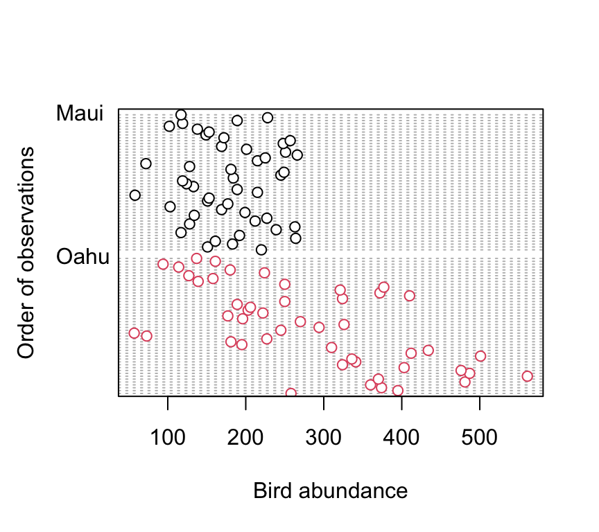
There doesn’t appear to be any obvious outliers in the abund variable for each island. However this plot does indicate that the ‘spread’ of bird abundance values is much greater for Oahu than for Maui. Hopefully, our linear model will be able to account for this.
xyplot(abund ~ rainfall | location, data = dataf, ylab = "bird abundance")
There appears to be a positive relationship between bird abundance and rainfall. The relationship seems to be more apparent for Maui compared to Oahu.
Now let’s take a look at the change in bird abundance over time on each island.
xyplot(abund ~ year | location, data = dataf, ylim = c(0,
800), ylab = "bird abundance")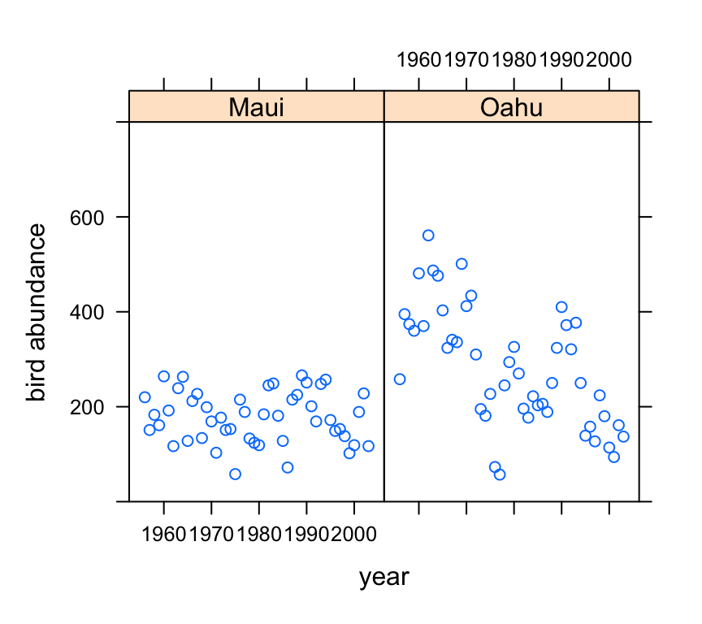
Looks like there may be a small decrease in bird abundance for birds sampled on Maui. The decrease on Oahu looks to be more apparent although there seems to be quite a lot of between year variability.
5. With reference to the study aims stated above, fit an appropriate linear model to these data using the lm() function.
So lets fit a linear model to explain the variability in bird abundance by rainfall and location. We’ll also include the interaction term between rainfall and location to see if any relationship is different between the two islands. I have also included the year variable as an additive effect as I want to try to account for the fact that these observations are potentially non-independent.
birds_lm <- lm(abund ~ rainfall + location + year + rainfall:location,
data = dataf)
6. Use appropriate residual plots to identify whether the modelling assumptions are met. Don’t forget to also plot the residuals from this model against all explanatory variables (including year). Can you see a problem? Can you assume homogeneity of variance of the residuals from your model? If not, then try to identify the cause of this problem. Make sure you describe and discuss this process in your R markdown document.
Let’s plot the usual model validation plots by plotting the model object.
par(mfrow = c(2, 2))
plot(birds_lm)
From the Residuals vs Fitted and Scale-Location plots (left-hand side) there seems to be a hint of heterogeneity of variance. On the Residuals vs Fitted plot the spread of the residuals is narrower for smaller fitted values compared to larger fitted values resulting in a slight fan shaped pattern. The QQ-plot suggests that the residuals are approximately normally distributed. The residuals vs leverage plot indicates that none of our residuals are unusual or influential. Looks good so far!
So, to investigate the issue of heterogeneity of variance further let’s plot our residuals against each explanatory variable. First we can plot the residuals from our linear model against the location variable.
plot(resid(birds_lm) ~ dataf$location, xlab = "location",
ylab = "Residuals")
abline(h = 0, lty = 2, col = 2)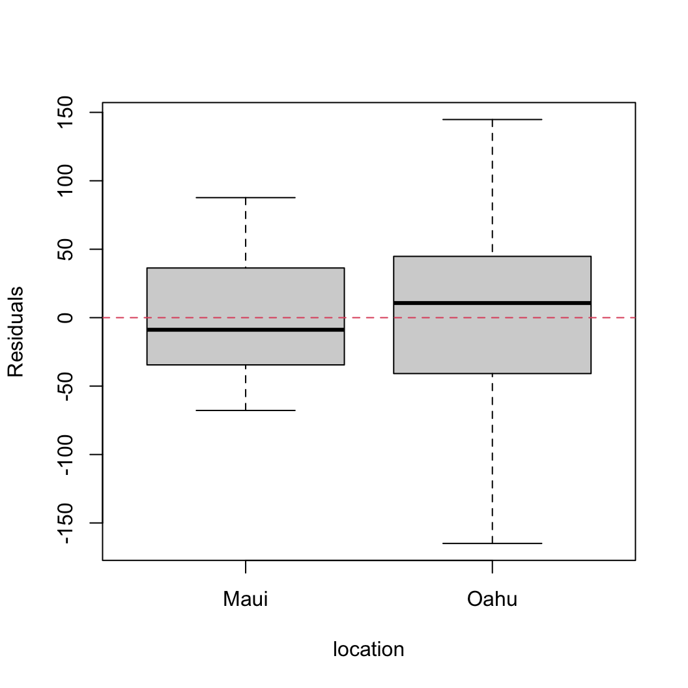
There are clear differences in the residual variance between each of the islands. Oahu has a much wider spread in residuals compared to Maui indicating a heterogeneity of variance associated with location.
We should also plot the residuals from our model against the rainfall explanatory variable.
plot(resid(birds_lm) ~ dataf$rainfall, xlab = "rainfall",
ylab = "Residuals")
abline(h = 0, lty = 2, col = 2)
Not a huge amount to worry about here. There doesn’t seem to be any heterogeneity of variance associated with the rainfall variable. Let’s be extra cautious though and plot the residuals from our model against the rainfall variable again but separately for each island.
xyplot(resid(birds_lm) ~ rainfall | location, data = dataf,
xlab = "rainfall", ylab = "Residuals")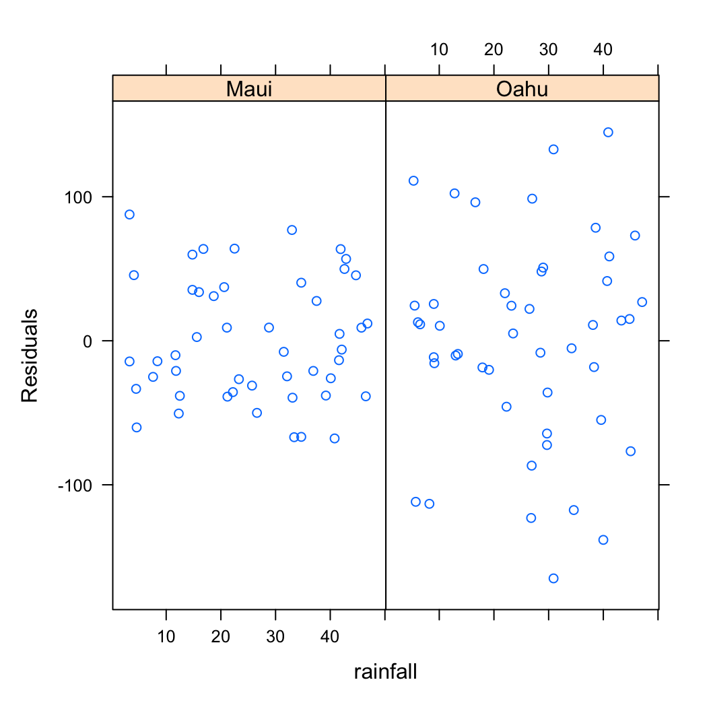
So the residuals look OK. We can still see that there is a different spread of our residuals between location which we picked up in our previous diagnostic plot.
Also, don’t forget we need to check the independence of residuals assumptions as these data were collected from both islands each year from 1956 - 2003. The best way to do this is to plot the residuals against the year variable for each island (location).
xyplot(resid(birds_lm) ~ year | location, data = dataf,
xlab = "year", ylab = "Residuals")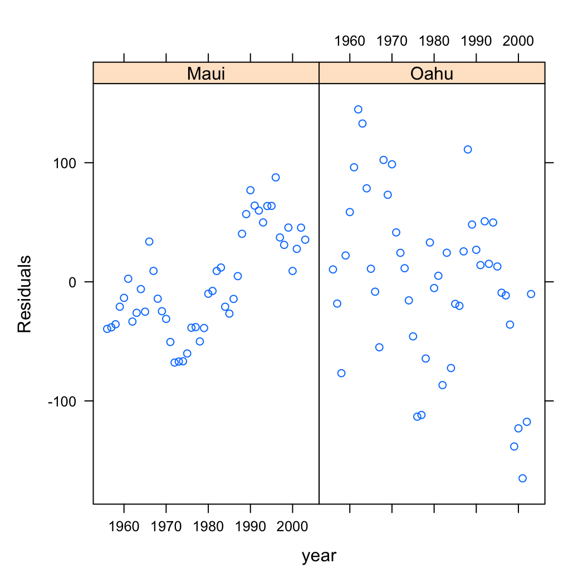
Oh dear, there are clear patterns in our residuals over time indicating issues with non-independence. The pattern is perhaps strongest for Maui but there also appears to be a downward trend in our residuals for Oahu.
7. Import the nlme package into R.
# I usually import any packages I am going to use in my
# analysis at the top of my R script or R markdown
# document. See above.
# if you want to do it here then
# library(nlme)
You will see that I have already done this at the top of this R markdown document using the library() function. It’s good practice to import all the packages required for a particular analysis near the start of your script.
8. Use the gls() function from the nlme package without any variance covariates or correlation structures to refit your linear model specified above (the model you fitted using the lm() function). This GLS model is equivalent to a standard linear model. You will use this GLS model to compare with models you subsequently fit. Store your GLS model in an object with a suitable name (birds_gls1 or similar).
birds_gls1 <- gls(abund ~ rainfall + location + year + rainfall:location,
data = dataf)
9. OK, let’s try to deal with the heterogeneity of variance issue we identified in Q6 above. Remember, it looks like the cause of our heterogeneity of variance was due to differences between location. Hopefully you remember how to deal with this situation using the varIdent variance covariate and the weights = argument when fitting a GLS model. Fit this model and call it something like birds_gls2.
vf1 <- varIdent(form = ~1 | location)
birds_gls2 <- gls(abund ~ rainfall + location + year + rainfall:location,
weights = vf1, data = dataf)
10. Compare the birds_gls1 and birds_gls2 models using AIC to identify the ‘best’ model.
kable(AIC(birds_gls1, birds_gls2))| df | AIC | |
|---|---|---|
| birds_gls1 | 6 | 1050.371 |
| birds_gls2 | 7 | 1027.923 |
The difference in AIC between our two models is 22.447 suggesting there is substantial support for the model which includes the variance covariate of location using the varIdent variance function. Notice we have also estimated one more degrees of freedom in the birds_gls2 due to our variance covariate.
11. Extract the residuals using the resid() function from this model and plot against the the location variable to check whether this model has sorted out the issue of heterogeneity of variance between our two islands. Don’t forget to use the argument type = "normalized" to extract the normalised residuals form the GLS model.
res_gls2 <- resid(birds_gls2, type = "normalized")
boxplot(res_gls2 ~ location, data = dataf, xlab = "location",
ylab = "residuals")
abline(h = 0, lty = 2, col = 2)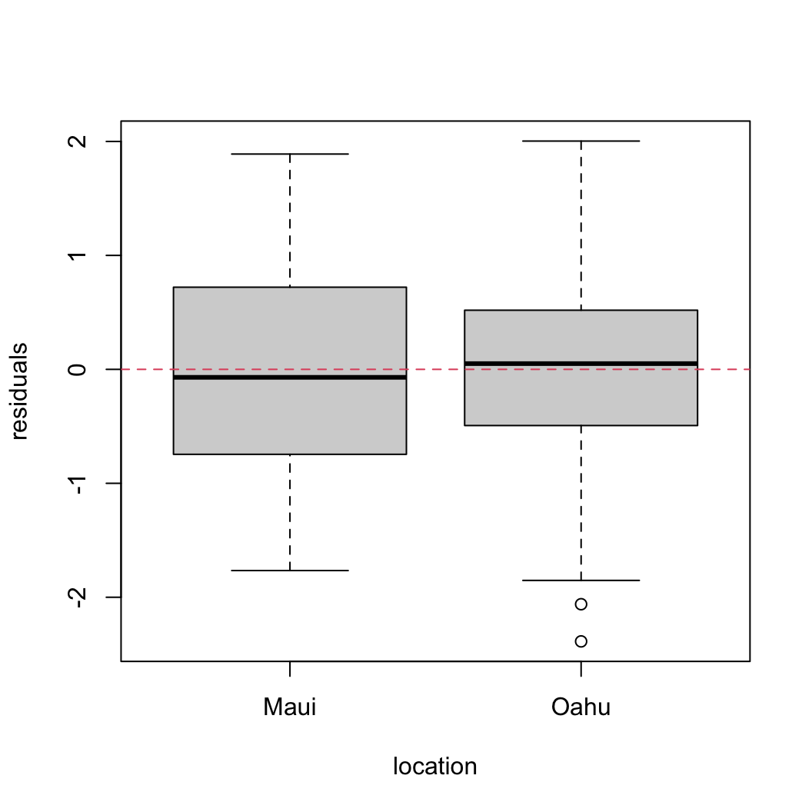
That’s looking quite a bit better!
12. OK, now that we’ve dealt with the heterogeneity of variance issue, its time to look at whether the residuals are independent. Use the extracted residuals from Q11 and plot these over time (year) for both of the island (locations). You can use either the xyplot() function from the lattice package or the coplot() function from base R.
xyplot(res_gls2 ~ year | location, data = dataf, xlab = "year",
ylab = "normalised residuals")
So we still see a clear pattern in our residuals over time. In Maui the residuals appear to decrease and then increase over time and in Oahu the residuals seem to generally decrease over time. This indicates that our residuals are clearly not independent.
If we want to be really flash then we could add a smoother to this residual plot to highlight the pattern.
xyplot(res_gls2 ~ year | location, data = dataf, type = c("p",
"smooth"), xlab = "year", ylab = "normalised residuals")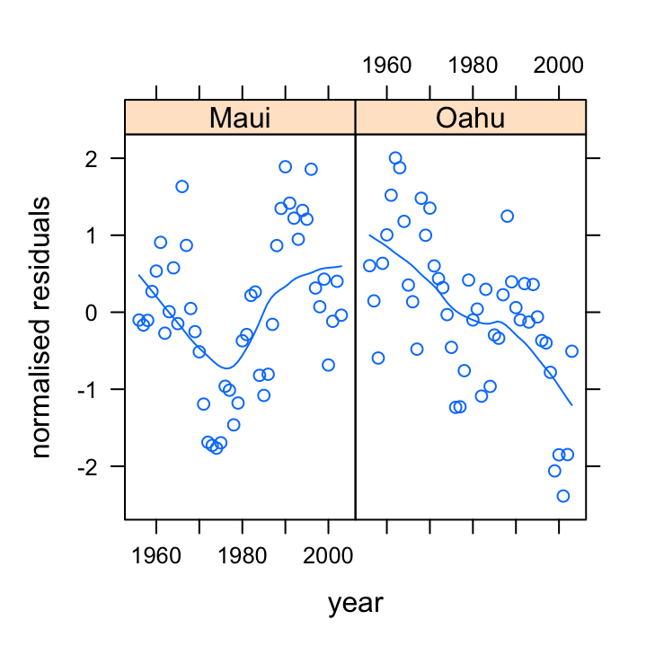
13. So now that we’ve identified non-independence in our residuals we need to decide what type of correlation structure to use in our GLS model to account for this non-independence. One of the best ways of doing this is to use the acf() function to plot the autocorrelation function and the pacf() function to plot the partial autocorrelation function on our residuals.
acf(res_gls2, main = "ACF of residuals")
So from the ACF plot it looks like we have a smooth decline in the correlation at successive lags which would indicate some kind of autoregressive (AR) type structure would model the non-independence in our residuals.
To determine what order our AR structure might be let’s take a look at the PACF plot.
pacf(res_gls2, main = "PACF of residuals")The PACF plot indicates that a first order autoregressive structure (an AR with a lag of 1) might suffice as the only ‘significant’ lag is at lag 1. Remember the blue dotted lines indicate the confidence interval around zero correlation.
14. Fit a new GLS model that incorporates both our variance covariate to deal with heterogeneity of variance and also a first order autoregressive correlation structure to deal with non-independence in our residuals at each site. Remember to include this AR(1) structure you will need to use the corAR1 function and the correlation = argument. The form of the corAR1 structure should include the year variable conditional (|) on the location. Assign your model to an appropriately named object (birds_gls3?).
cor1 <- corAR1(form = ~year | location)
birds_gls3 <- gls(abund ~ rainfall + location + year + rainfall:location,
weights = vf1, correlation = cor1, data = dataf)
15. Now that we’ve fitted our model let’s once again extract our residuals and plot them against year for each location to see if the first order autoregressive correlation structure has dealt with our non independence. You should also re-plot the ACF and PACF plots.
res_gls3 <- resid(birds_gls3, type = "normalized")
xyplot(res_gls3 ~ year | location, data = dataf, xlab = "year",
ylab = "normalised residuals")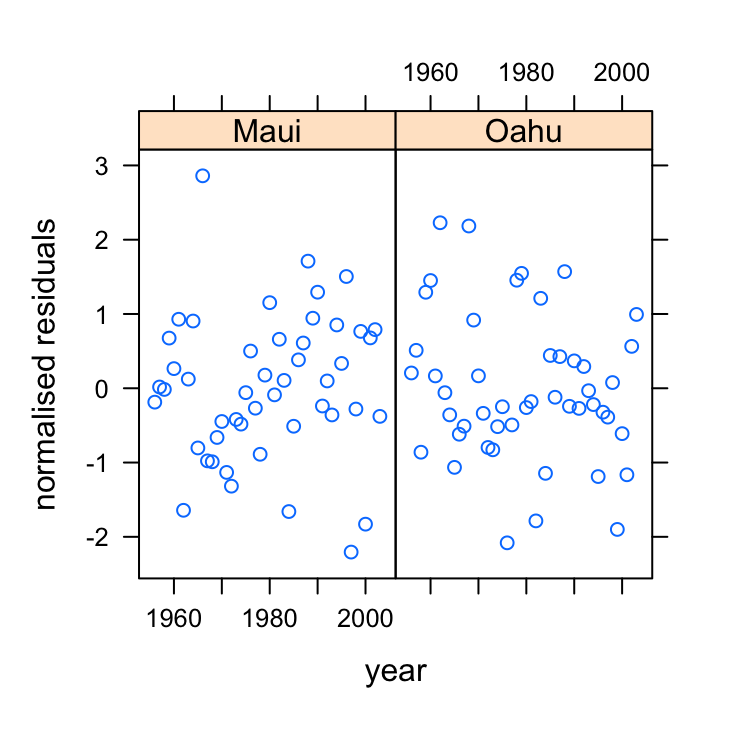
OK, they look sweet. No patterns present. Let’s look at the ACF and PACF plots to confirm.
acf(res_gls3, main = "ACF")
pacf(res_gls3, main = "PACF")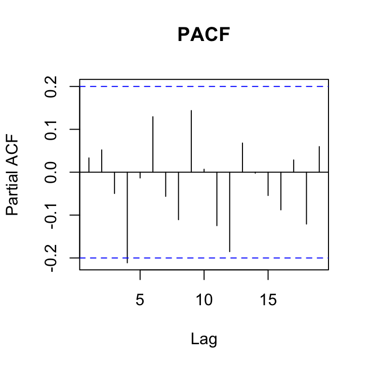
Not looking too shabby although here is a hint that there is still a ‘significant’ correlation at lag 4 in both of these plots that may warrant a more complex correlation structure. Perhaps we’ll take a look at a more complex structure in a bit.
16. Compare all of your fitted models so far using AIC. Which model has the most support?
kable(AIC(birds_gls1, birds_gls2, birds_gls3))| df | AIC | |
|---|---|---|
| birds_gls1 | 6 | 1050.3706 |
| birds_gls2 | 7 | 1027.9233 |
| birds_gls3 | 8 | 927.3333 |
So the model that incorporates both the variance covariate and the AR(1) correlation structure seems to be our ‘best’ model so far.
17. So, now that we’ve dealt with the main issues of residual variance heterogeneity and non-independence it’s time to turn our attention to performing model selection of our explanatory variables (remember this is the fixed part of the model). However, before we can perform model selection we must first refit our model using maximum likelihood (ML) rather than restricted maximum likelihood (REML) which is the default. To do this we refit the model using the gls() function once again but this time include the argument method = "ML".
birds_gls4 <- gls(abund ~ rainfall + location + year + rainfall:location,
weights = vf1, correlation = cor1, method = "ML", data = dataf)
18. Now we can perform model selection using either AIC or by performing a likelihood ratio test (LRT). It’s up to you how you want to perform this. If you want to automate this process you can use the drop1() function, but remember you need to use this sensibly and with care and don’t forget about the biology! If you use the argument test = "none" with the drop1() function this will return the AIC values for each iteration. Conversely, if you use the argument test = "Chisq" this will return the LRT statistics.
So lets use AIC to compare models
drop1(birds_gls4, test = "none")
## Single term deletions
##
## Model:
## abund ~ rainfall + location + year + rainfall:location
## Df AIC
## <none> 943.65
## year 1 943.62
## rainfall:location 1 944.12
So, when we drop the interaction term between the rainfall and locations variables the AIC actually increases. This suggests we can remove the rainfall:location interaction term from our model. Let’s refit without and use drop1() again on our new model.
birds_gls5 <- gls(abund ~ rainfall + location + year, weights = vf1,
correlation = cor1, method = "ML", data = dataf)
drop1(birds_gls5, test = "none")
## Single term deletions
##
## Model:
## abund ~ rainfall + location + year
## Df AIC
## <none> 944.12
## rainfall 1 1088.43
## location 1 946.84
## year 1 943.97
# alternatively you can use the update function to refit
# the model (not run)
# birds_gls5 <- update(birds_gls4, . ~.
# -rainfall:location)
Right, so this output suggests that we shouldn’t remove either the rainfall or location variables from the model, but suggests that the goodness of fit doesn’t change very much if we remove year. So lets go ahead and remove year and then rerun drop1().
birds_gls6 <- gls(abund ~ rainfall + location, weights = vf1,
correlation = cor1, method = "ML", data = dataf)
drop1(birds_gls6, test = "none")
## Single term deletions
##
## Model:
## abund ~ rainfall + location
## Df AIC
## <none> 943.97
## rainfall 1 1090.16
## location 1 945.83
So it looks like our minimum adequate model should contain the explanatory variables of rainfall and location.
19. Once you have determined your minimum adequate model, refit this model using REML once again (remember, this is the default for the gls() function).
birds_gls7_REML <- gls(abund ~ rainfall + location, weights = vf1,
correlation = cor1, data = dataf)
20. Almost there! Now that we’ve determined our minimum adequate model we now need to revalidate the model using our usual residuals plots.
Let’s display the usual model diagnostic plots first.
# residuals vs Fitted
plot(birds_gls7_REML)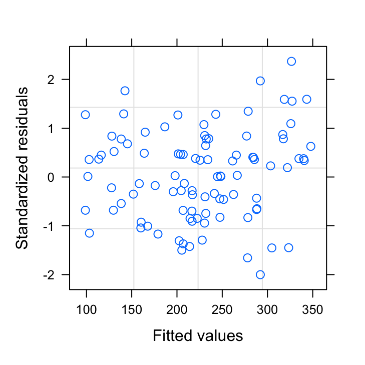
# QQplot
qqnorm(birds_gls7_REML, abline = c(0, 1), lty = 2)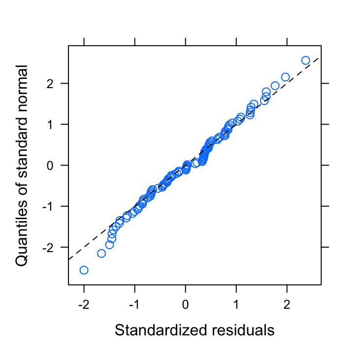
These seem to look OK. Now let’s extract our normalised residuals from our minimum adequate model and plot these against all explanatory variables.
res_gls7 <- resid(birds_gls7_REML, type = "normalized")
plot(dataf$location, res_gls7, xlab = "location", ylab = "normalised residuals",
main = "")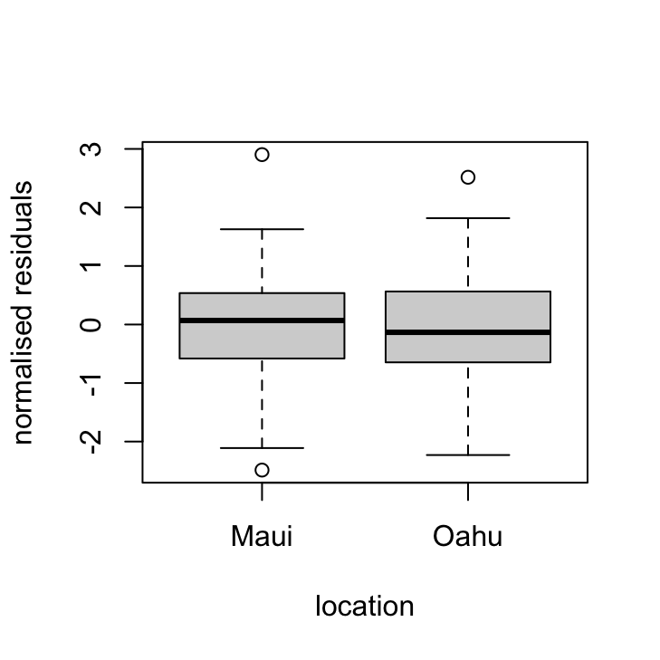
plot(dataf$year, res_gls7, xlab = "year", ylab = "normalised residuals",
main = "")
acf(res_gls7, main = "ACF")pacf(res_gls7, main = "PACF")
OK, things are looking pretty good. The variance heterogeneity between islands has been dealt with, there doesn’t appear to be any patterns in our residuals over time and the ACF and PACF plots look OK (although there’s still that hint on non-independence with at lag 4 but its a very low correlation (0.2)).
21. Now that we’re happy with our model it’s time to see what the model is telling us. Use the summary() function with our final model to obtain the parameter estimates. What is the estimate of the residual variance for Maui and Oahu? (hint: take a look at the Variance function section of the output - you will need to do a little maths!).
summary(birds_gls7_REML)
## Generalized least squares fit by REML
## Model: abund ~ rainfall + location
## Data: dataf
## AIC BIC logLik
## 929.1273 944.3229 -458.5636
##
## Correlation Structure: AR(1)
## Formula: ~year | location
## Parameter estimate(s):
## Phi
## 0.866559
## Variance function:
## Structure: Different standard deviations per stratum
## Formula: ~1 | location
## Parameter estimates:
## Maui Oahu
## 1.000000 2.516114
##
## Coefficients:
## Value Std.Error t-value p-value
## (Intercept) 87.43848 19.25286 4.541584 0.0000
## rainfall 3.44195 0.15328 22.455252 0.0000
## locationOahu 98.29025 51.02740 1.926225 0.0571
##
## Correlation:
## (Intr) ranfll
## rainfall -0.205
## locationOahu -0.363 0.009
##
## Standardized residuals:
## Min Q1 Med Q3 Max
## -2.00062920 -0.68054513 0.03075564 0.65289845 2.36837189
##
## Residual standard error: 39.35089
## Degrees of freedom: 96 total; 93 residual
The variance estimate for Maui is just the squared value of residual standard error. Remember, the variance function estimates are multiplication factors we use to multiple the residual standard error by. So for Maui this is 1 x 39.35 = 39.35 and then we square this value to go from a standard deviation to a variance (39.35)2 = 1548.49.
For Oahu, we multiple the residual standard error by the multiplication factor 2.52, so 2.52 x 39.35 = 99.16 and again square this value to get a variance (99.16)2 = 9833.54.
22. Once again looking at the output of the summary table what is the estimate of the correlation of residuals at lag 1, 2 and 3?
The estimate of the correlation between residuals at lag 1 is just the estimate of Phi = 0.867 to the power of 1 (the lag) = (0.867)1 = 0.867. At lag 2 we have (0.867)2 = 0.752 and lag 3 (0.867)3 = 0.652 and so on.
23. OK, let’s finish this beast! Take a look at the parameter estimates and see if you can figure out what they are telling you. What does the intercept parameter represent? What do the rainfall and locationOahu parameters represent?
The intercept parameter represents the estimated number of birds in Maui when the rainfall is 0, which is estimated at 87.44.
The rainfall parameter is the estimate of the slope of the relationship between rainfall and bird abundance for both Maui and Oahu (remember, the interaction term was non-significant). So for every one unit increase in rainfall there is on average an increase of 3.44 birds.
The parameter locationOahu is the difference in the intercept between Maui and Oahu. So the estimate for the intercept for Oahu is 87.44 + 98.29 = 174.88 birds.
24. A picture paints a thousand words as they say, so finally, let’s create a graph of our predicted values along with 95 % confidence intervals. There are many ways to do this but perhaps the easiest way to also contain the standard errors of the fitted values is to use the predictSE() function from the AICcmodavg package (you will need to install this). You use the predictSE() function in much the same way as you would use the standard predict() function. See ?predictSE() for more details about this function.
# create data to make predictions from. Do each location
# separately.
my_data_maui <- data.frame(rainfall = seq(min(dataf$rainfall),
max(dataf$rainfall), length = 50), location = c("Maui"))
my_data_oahu <- data.frame(rainfall = seq(min(dataf$rainfall),
max(dataf$rainfall), length = 50), location = c("Oahu"))
# now use the predictSE function with our model and new
# data. Again do separately for each location
p.maui <- predictSE(birds_gls7_REML, newdata = my_data_maui,
se.fit = TRUE)
p.oahu <- predictSE(birds_gls7_REML, newdata = my_data_oahu,
se.fit = TRUE)
# Plot our raw data but without points
plot(dataf$rainfall, dataf$abund, type = "n", xlab = "rainfall",
ylab = "bird abundance")
# add different coloured points for each location
points(dataf$rainfall[dataf$location == "Maui"], dataf$abund[dataf$location ==
"Maui"], col = "deepskyblue", pch = 16)
points(dataf$rainfall[dataf$location == "Oahu"], dataf$abund[dataf$location ==
"Oahu"], col = "yellowgreen", pch = 16)
# add the fitted lines for each location
lines(my_data_maui$rainfall, p.maui$fit, col = "deepskyblue")
lines(my_data_oahu$rainfall, p.oahu$fit, col = "yellowgreen")
# add the upper and lower 95% confidence intervals to
# each line for maui
lines(my_data_maui$rainfall, p.maui$fit + 1.96 * (p.maui$se.fit),
col = "deepskyblue", lty = 2)
lines(my_data_maui$rainfall, p.maui$fit - 1.96 * (p.maui$se.fit),
col = "deepskyblue", lty = 2)
# for oahu
lines(my_data_oahu$rainfall, p.oahu$fit + 1.96 * (p.oahu$se.fit),
col = "yellowgreen", lty = 2)
lines(my_data_oahu$rainfall, p.oahu$fit - 1.96 * (p.oahu$se.fit),
col = "yellowgreen", lty = 2)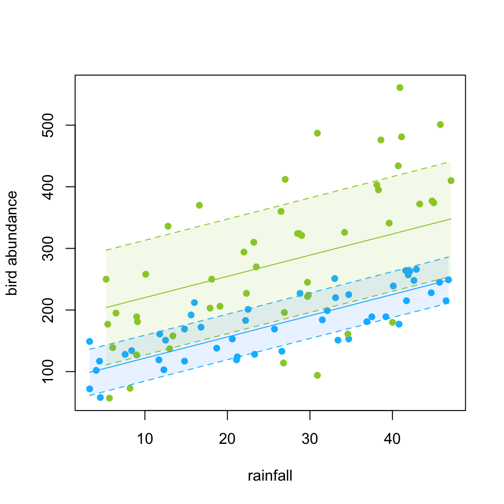
Session Information
sessionInfo()## R version 3.6.3 (2020-02-29)
## Platform: x86_64-apple-darwin15.6.0 (64-bit)
## Running under: macOS Catalina 10.15.7
##
## Matrix products: default
## BLAS: /System/Library/Frameworks/Accelerate.framework/Versions/A/Frameworks/vecLib.framework/Versions/A/libBLAS.dylib
## LAPACK: /Library/Frameworks/R.framework/Versions/3.6/Resources/lib/libRlapack.dylib
##
## locale:
## [1] en_GB.UTF-8/en_GB.UTF-8/en_GB.UTF-8/C/en_GB.UTF-8/en_GB.UTF-8
##
## attached base packages:
## [1] stats graphics grDevices utils datasets methods base
##
## other attached packages:
## [1] AICcmodavg_2.3-1 stringr_1.4.0 dplyr_1.0.1 knitr_1.29 ggplot2_3.3.2 effects_4.2-0 nlme_3.1-148
## [8] car_3.0-9 carData_3.0-4 lattice_0.20-41
##
## loaded via a namespace (and not attached):
## [1] Rcpp_1.0.5 unmarked_1.0.1 digest_0.6.25 packrat_0.5.0 plyr_1.8.6 R6_2.4.1
## [7] cellranger_1.1.0 stats4_3.6.3 survey_4.0 evaluate_0.14 highr_0.8 pillar_1.4.6
## [13] rlang_0.4.7 curl_4.3 readxl_1.3.1 minqa_1.2.4 data.table_1.12.8 raster_3.3-13
## [19] nloptr_1.2.2.2 Matrix_1.2-18 rmarkdown_2.3 labeling_0.3 splines_3.6.3 lme4_1.1-23
## [25] statmod_1.4.34 foreign_0.8-76 munsell_0.5.0 tinytex_0.25 compiler_3.6.3 xfun_0.16
## [31] pkgconfig_2.0.3 htmltools_0.5.0 mitools_2.4 nnet_7.3-14 insight_0.9.0 tidyselect_1.1.0
## [37] tibble_3.0.3 codetools_0.2-16 rio_0.5.16 crayon_1.3.4 withr_2.2.0 MASS_7.3-51.6
## [43] grid_3.6.3 xtable_1.8-4 gtable_0.3.0 lifecycle_0.2.0 DBI_1.1.0 magrittr_1.5
## [49] formatR_1.7 scales_1.1.1 zip_2.1.0 stringi_1.4.6 farver_2.0.3 sp_1.4-2
## [55] ellipsis_0.3.1 vctrs_0.3.2 generics_0.0.2 boot_1.3-25 openxlsx_4.1.5 RColorBrewer_1.1-2
## [61] tools_3.6.3 forcats_0.5.0 glue_1.4.1 purrr_0.3.4 hms_0.5.3 parallel_3.6.3
## [67] abind_1.4-5 survival_3.2-3 yaml_2.2.1 colorspace_1.4-1 VGAM_1.1-3 haven_2.3.1